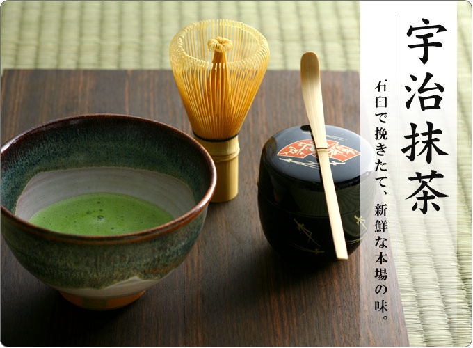
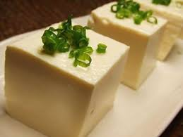
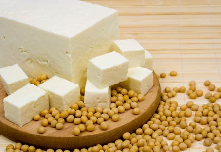
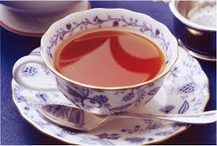
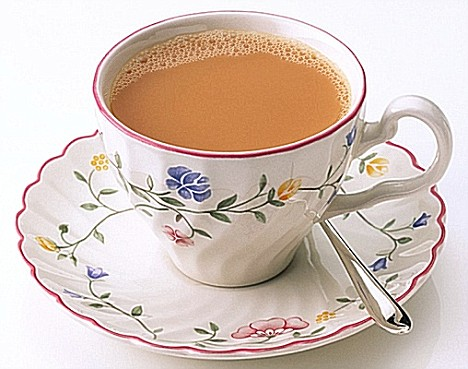

Making Coffee
Making Matcha
Making Tofu
Making Tea
Making Coffee
The United States of America (USA or U.S.A.), commonly referred to as the United States (US or U.S.), America, or simply the States, is a federal republic[10][11] consisting of 50 states, 16 territories, and a federal district. The 48 contiguous states and the federal district of Washington, D.C. are in central North America between Canada and Mexico. The state of Alaska is the northwestern part of North America, west of Canada and east of Russia, which is across the Bering Strait in Asia, and the state of Hawaii is an archipelago in the mid-North Pacific. The country also has five populated and nine unpopulated territories in the Pacific and the Caribbean.
At 3.79 million square miles (9.83 million km2) in total and with around 316 million people, the United States is the fourth-largest country in total area, the fifth largest in the contiguous area and third in population. It is one of the world's most ethnically diverse and multicultural nations, the product of large-scale immigration from many countries.[12] The geography and climate of the U.S. is also extremely diverse, with deserts, plains, forests, and mountains that are home to a wide variety of wildlife.
Making Matcha
Japan is an island nation in East Asia. Located in the Pacific Ocean, it lies to the east of the Sea of Japan, China, North Korea, South Korea and Russia, stretching from the Sea of Okhotsk in the north to the East China Sea and Taiwan in the south. The characters that make up Japan's name mean "sun-origin", which is why Japan is sometimes referred to as the "Land of the Rising Sun".
Japan is an archipelago of 6,852 islands. The four largest islands are Honshu, Hokkaido, Kyushu, and Shikoku, which together comprise about ninety-seven percent of Japan's land area. Japan has the world's tenth-largest population, with over 126 million people. Honshū's Greater Tokyo Area, which includes the de facto capital city of Tokyo and several surrounding prefectures, is the largest metropolitan area in the world, with over 30 million residents.
Archaeological research indicates that people lived in Japan as early as the Upper Paleolithic period. The first written mention of Japan is in Chinese history texts from the 1st century AD. Influence from other nations followed by long periods of isolation has characterized Japan's history. From the 12th century until 1868, Japan was ruled by successive feudal military shogunates in the name of the Emperor. Japan entered into a long period of isolation in the early 17th century, which was only ended in 1853 when a United States fleet pressured Japan to open to the West. Nearly two decades of internal conflict and insurrection followed before the Meiji Emperor was restored as head of state in 1868 and the Empire of Japan was proclaimed, with the Emperor as a divine symbol of the nation. In the late 19th and early 20th centuries, victory in the First Sino-Japanese War, the Russo-Japanese War and World War I allowed Japan to expand its empire during a period of increasing militarism. The Second Sino-Japanese War of 1937 expanded into part of World War II in 1941, which came to an end in 1945 following the atomic bombings of Hiroshima and Nagasaki. Since adopting its revised constitution in 1947, Japan has maintained a unitary constitutional monarchy with an emperor and an elected legislature called the Diet.
Making Tofu
Tofu, also called bean curd, is a food made by coagulating soy milk and then pressing the resulting curds into soft white blocks. It is a component in many East Asian and Southeast Asian cuisines. There are many different varieties of tofu, including fresh tofu and tofu that has been processed in some way. Tofu has a subtle flavor and can be used in savory and sweet dishes. It is often seasoned or marinated to suit the dish.
Tofu originated in ancient China some 2,000 years ago. Chinese legend ascribes its invention to prince Liu An (179–122 BC). Tofu and its production technique were introduced into Korea and then Japan during the Nara period. It spread into other parts of East Asia as well. This spread likely coincided with the spread of Buddhism because it is an important source of protein in the vegetarian diet of East Asian Buddhism. Li Shizhen in the Ming Dynasty described a method of making tofu in Bencao Gangmu.
Tofu has a low calorie count, relatively large amounts of protein, and little fat. It is high in iron and depending on the coagulant used in manufacturing, may also be high in calcium or magnesium.
Making Tea
Tea is an aromatic beverage commonly prepared by pouring hot or boiling water over cured leaves of the tea plant, Camellia sinensis. After water, tea is the most widely consumed beverage in the world. It has a cooling, slightly bitter, and astringent flavour that many people enjoy.
Tea likely originated in China as a medicinal drink. It was first introduced to Portuguese priests and merchants in China during the 16th century. Drinking tea became popular in Britain during the 17th century. The British introduced it to India, in order to compete with the Chinese monopoly on the product.
Tea has long been promoted for having a variety of positive health benefits. Recent studies suggest that green tea may help reduce the risk of cardiovascular disease and some forms of cancer, promote oral health, reduce blood pressure, help with weight control, improve antibacterial and antivirasic activity, provide protection from solar ultraviolet light, and increase bone mineral density. Green tea is also said to have "anti-fibrotic properties, and neuroprotective power." Additional research is needed to "fully understand its contributions to human health, and advise its regular consumption in Western diets."
Tea catechins have known anti-inflammatory and neuroprotective properties, help regulate food intake, and have an affinity for cannabinoid receptors, which may suppress pain and nausea and provide calming effects.
Consumption of green tea is associated with a lower risk of diseases that cause functional disability, such as stroke, cognitive impairment, and osteoporosis in the elderly.